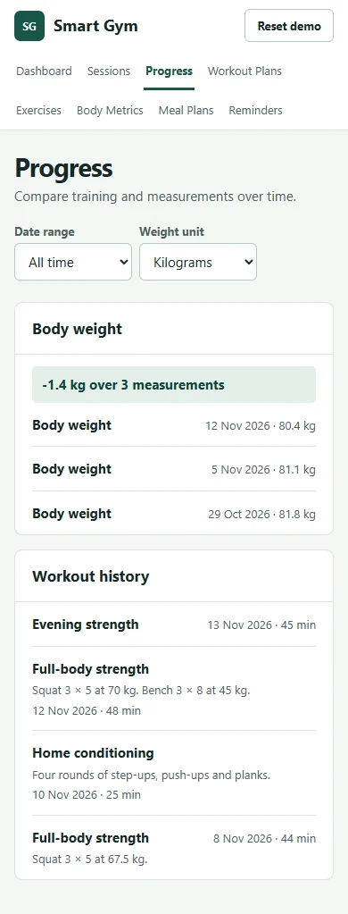

Engineering project · Runtime screenshot
Smart Gym Transformation App
Log workouts and body measurements, then review dated training progress and weight trends.
Local portfolio demo
View GitHub sourceRun the local demo
From the prepared project checkout, run these commands and open the address printed by the server. The repository may require access.
cd smart-gym-transformation-app/frontend
npm ci
npm run demo

Problem
Connect dated workout sessions and body measurements to a readable progress history.
Architecture
A React and TypeScript interface shares record editors and an API client. Demo mode uses browser storage with fictional records. The ASP.NET Core API uses EF Core and PostgreSQL with account-scoped queries and rotating refresh cookies.
Engineering decisions
- Store workout dates independently from record creation timestamps.
- Store duration in whole minutes and weight in kilograms, with a display unit switch.
- Keep older records with unknown ownership excluded from authenticated account views.
Implemented workflow
- Create and edit a workout, then filter its history by date.
- Log body weight and switch the progress display between kilograms and pounds.
- Reset fictional demo records or use the documented full-stack setup.
Verified result
The source handoff records seven backend tests, Release and frontend builds, lint, TypeScript, browser workflows and PostgreSQL integration checks including account isolation and token rotation. Changes remain local.
- Reviewed the project README, source configuration, captured screens and completion handoff in project-2026.
Scope and next steps
- The browser demo uses fictional data saved to the current browser. It does not connect to the account API.
- Full-stack use requires the documented PostgreSQL and API setup and private server signing configuration.
- The handoff records an older development signing key in repository history. Public deployment requires resolving that historical exposure.
Technology
React · TypeScript · ASP.NET Core · EF Core · PostgreSQL
Preview availability
Static runtime preview. No hosted interactive demo is available. The prepared improvements were verified in a local checkout and have not been pushed to GitHub; public source may differ from these captures. Use the repository documentation for the public version's setup requirements.
← Return to portfolio